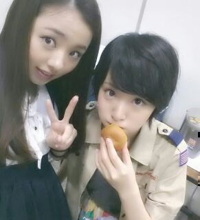
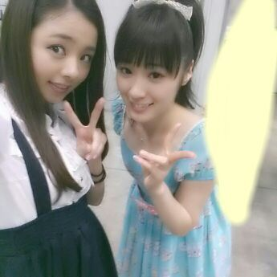

| 2013/08 17 Sat | ライブはどんなヘアスタイルで行 こうかな？？？ ろってぃ〜☆ |
こんばんわぁぁ〜☆
ろってぃ-やよ-ん。
ごめんねごめんねぇ〜
珍しく3日ぶりぶりブリトニーの
blog更新になってしまった(´▽`)
もうすぐ始まる
全国ツアーライブのリハーサルで
覚えることもたくさんあって、
お家帰ってお風呂入って寝る！
起きて リハーサルへ向かう！
ってな生活？
(о´∀`о)(о´∀`о)(о´∀`о)
でもね、実はまひろね、
この期間 好きなのっ 笑
１日中ずっと歌ってられるし
躍ってられるから！！！
自分の出ない曲のリハしてる時は
躍りたりない位だよっ\(*´▽`*)/
元気モリモリやで。
体調大丈夫かなあ？とか
心配しなくても大丈夫だかんねっ♪
とか言っても 優しい皆は
いつも気にしてくれるんだよね、、、
ありがとう。
大好きだよ(〃ω〃)！
あのね、カラオケドボンの収録が
終わってカメラがとまった後、
審査員してくださった真矢さんが
「君本当うまいよ。いけるよ。」
って言ってくれた。
本当 嬉しかった (T-T)うー。
ほならほなら
し(^3^)/もん返しをしながら
載せきれなかった写真たちを
ちょくちょく貼ってくねーーー ♪
ではいっきまーーす =・▽・=
どんっ！こまちゃん。

☆薬局で何買うんー？
★洗剤類やペーパー類や化粧品！
日常で使うものだよ(^_^)
☆ ろってぃ-の腕噛むよー？
★だーめーよーー =´ω`=
噛んでよしなのは
メンバーらけよっ♪てへ
どんっ！ かん。こと かずみ

☆あんな高い所で独り注目されて
どうやったん〜？
★カラオケドボンはゆっておくけど
まひろ めっちゃめっちゃ
緊張したからねっ=>▽<=
まひろハンドマイクで自由に動いて
リズムとって歌う人だから
スタンドマイク+高いし 落ちるし
なかなかなもんだったってばよ！笑
☆うーソロ曲だしてくれへんのかな？
★そう聞いてくれるのは
嬉しゅう気持ちやで(*´▽`*)/
ありがとう。
☆俺も握手会の時 歌ってもらおっかな？★恥ずかしいけど
頑張って歌います(〃▽〃)
☆やっぱりRottyは歌すごいよ、
どんな練習してるの？？
★なるべく家に出る前は
軽くストレッチをして
歌える状態にしてから行くよ！
後、普段から私生活やカラオケで歌う^^
☆プロの方に改めて評価してもらえて
自信になったんちゃう？
★うーん、歌うまいねって
言ってもらえてるけど
自分はまだまだって分かってるし
誉めてもらったけどダメな所も
たくさんあると思うから
もっともっと 頑張りたい！
どん！ あにあに。

☆三日月を個別握手会で
歌ってもらってもいいの？
★断るわけないやん\(^▽^)/
こんな歌声でも聞いてくれるんなら
嬉しゅうわ♪
☆ろってぃはどんな歌い手に
なりたいん？
★パワフルな人になるよ(・▽・)！
おおーーきなステージで
おもいっきりリズムきざんで歌って
開場に来ている人達 を1つにするの！！
受験勉強で大変な時、
塾の先生に言われたの、
そうなりたいんなら毎日寝る前に
「自分がそのステージに立って
liveしてることを妄想してから寝ろ！！！」
ずっと夢描いて
毎日頑張っておりまぁ〜〜す
((( ⊂( ・▽・)⊃わら
☆ろってぃ-は Zepp liveのたち位置
下上どっち多い？
★下上どっちにも行くけど
どっちかと言えば
まひろ下手が多いんかな〜ん(*´ω｀)
皆から見て左側だね！
☆制服のマネキンなら何だろ？
私服の私？
★全身タイツの川村真洋。
今日はここまでっ＼(^o^)／
今は 外のベンチでたそがれてます！
引き続き頑張ろってぃーや！！！
バイバイっ ))))のし
コメント(207)
2013/08/17 20:00